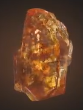

| Soul |
Orange |
The Soul Stone ranks as possibly the most dangerous of all the Infinity Stones, with it holding a special
standing among the others. Uniquely, in its shrine on Vormir, the Stone purposefully imposed a test
to those who would try to claim it - only the sacrifice of a loved one to the Stone would allow for someone to wield it.
|
 |
| Time |
Green |
Housed in the Eye of Agamotto by Earth's first sorcerer Agamotto, a Master of the Mystic Arts can use the Time Stone (green) to alter and manipulate time. In Doctor Strange, Dr. Stephen Strange finds the Eye of Agamotto and learns how to use it to save the Earth from Dormammu by trapping him in a time loop until the demon abandons his plans for Earth. |
 |
| Space |
Blue |
As the Infinity Stone that represents and governs over space, the Space Stone grants the wielder absolute control over space itself. It is primarily used to open portals to other locations and can even allow interdimensional travel. |
 |
| Mind |
Yellow |
As the Infinity Stone that represents and governs the fabric of mind, the Mind Stone grants whoever holds it complete control over the hearts and minds of others. Like with all the other Infinity Stones, it is among the most powerful artifacts in all existence. |
 |
| Reality |
Red |
The Reality Stone granted its user absolute control over the fabric of reality itself. However, like all Infinity Stones, it can only be wielded by beings of sufficient power. When allowed to influence an average human it will inevitably kill them, as evidenced by Jane Foster. The Reality Stone's power is such that it can affect reality on a universal scale. |
 |
| Power |
Purple |
As the Infinity Stone that embodies both the sustaining and destructive forces of the universe, the Power Stone grants its wielder tremendous energy manipulation capabilities. Due to the amount of energy the Power Stone releases, it is the most destructive out of all the Infinity Stones in terms of raw power. |
 |